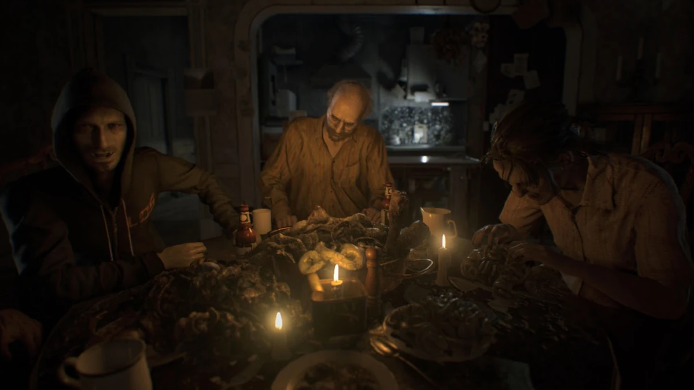
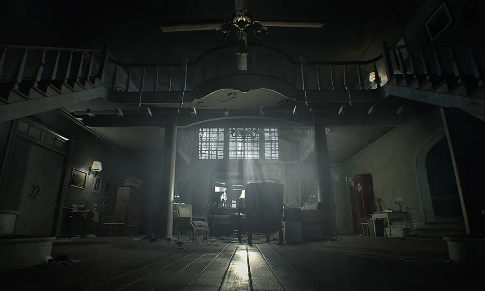
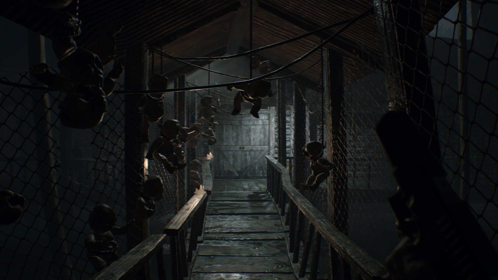
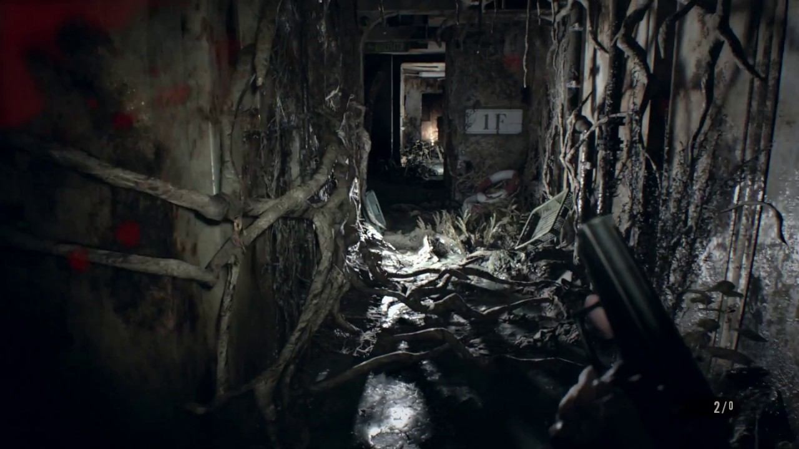

Resident Evil 7 marks a major turning point of the Resident Evil series as it repopularized the series. After Resident Evil 4, the series kept focusing more on action and less on the horror elements that made it popular in the first place. This game resets the franchises horror identity as it primarily focuses on horror using a first person perspective which is a first for the series. This game introduces an entirely new character named Ethan Winters rather than bringing back already popular characters. This game also introduces a new type of bioweapon called the mold which is different than a virus or a parasite.
The game starts with a video message from Mia Winters, who is Ethan Winter's missing wife, telling him to come get her from a house in Louisiana. After driving there, Ethan frees her from a locked cell in the basement and they try to escape. As they try to escape Mia gets dragged away off screen and Ethan is left to find her again. After answering a call from Zoe, Ethan gets attacked by Mia who is now crazy and murderous. After "killing" an infected Mia, Ethan tries to escape the house but is knocked out by Jack Baker who is the father of the family. You are then brought to a dinner table where the family is all sat down and eating. The family consists of Jack, Marguerite, Lucas, and Zoe however Zoe is the only non-infected family member and is hiding. Throughout the game she guides you through the house and helps you make a cure for the mold. The thing behind the mold and the infection of the Baker family is a little girl named Evelyn who is a bioweapon created by the Umbrella Corporation and was supposed to be transported somewhere on a boat but it crashed near the Baker household. Evelyn and Mia were were the only survivor of the crash and were found by the Baker family who brang them back to the house to help them. Evelyn then infected them in hopes of having her own family. Throughout the game she tries to make Ethan her dad to complete the family but he escapes the house, kills Marguerite, escapes Lucas, Kills Jack, and cures Mia. Ethan and Mia then get on a boat to escape the property but get stopped by Evelyn. You then play as Mia who wakes up in the boat and now has to save Ethan from Evelyn. After saving Ethan, Mia gets captured and so Ethan sets out to put an end to Evelyn and kills her. They then get picked up by the Bioterrorism Security Assessment Alliance (BSSA) and escape the property together.



